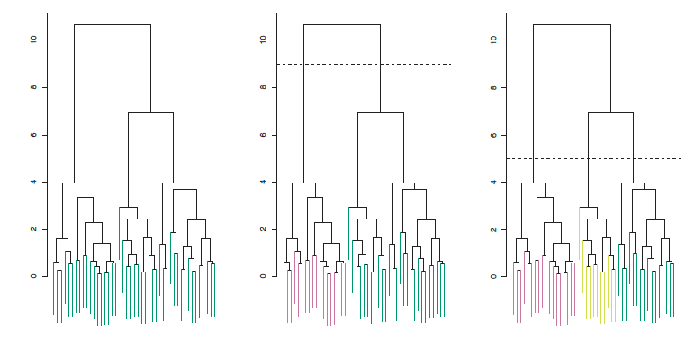
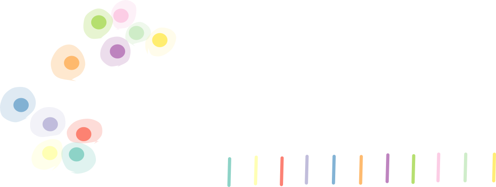
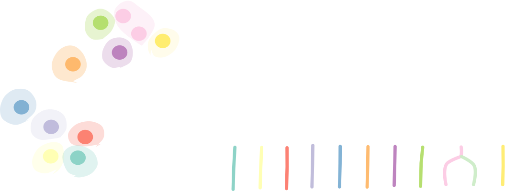
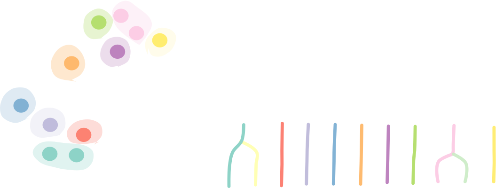
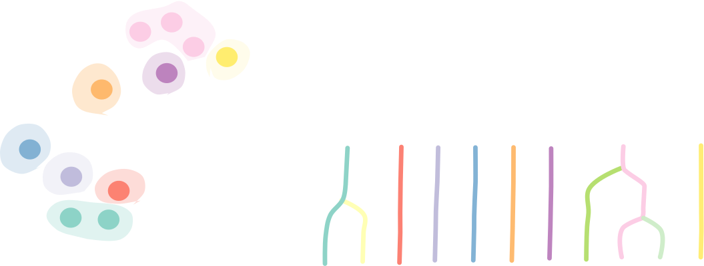
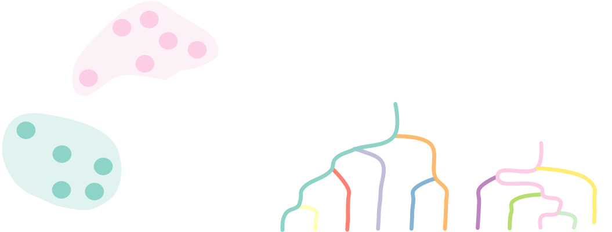
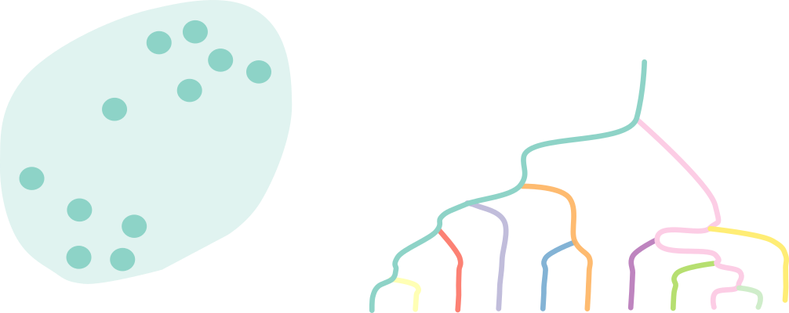
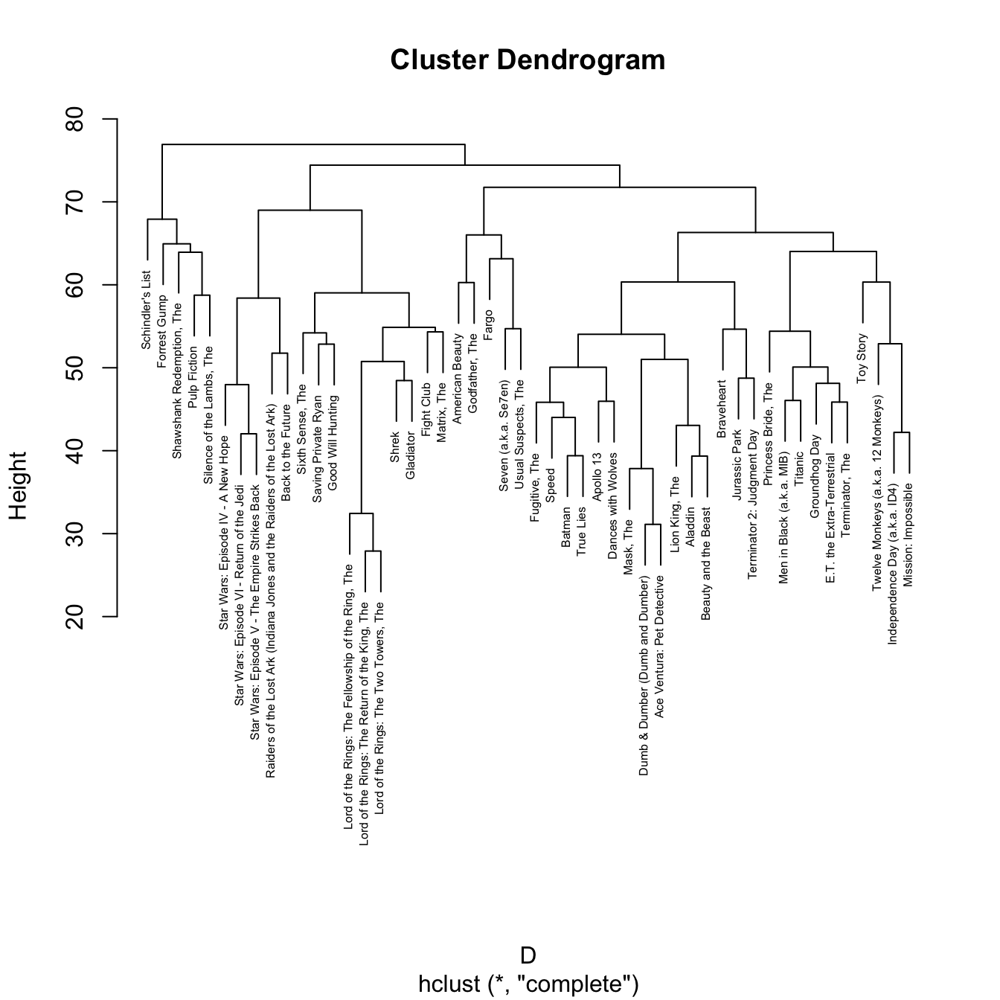
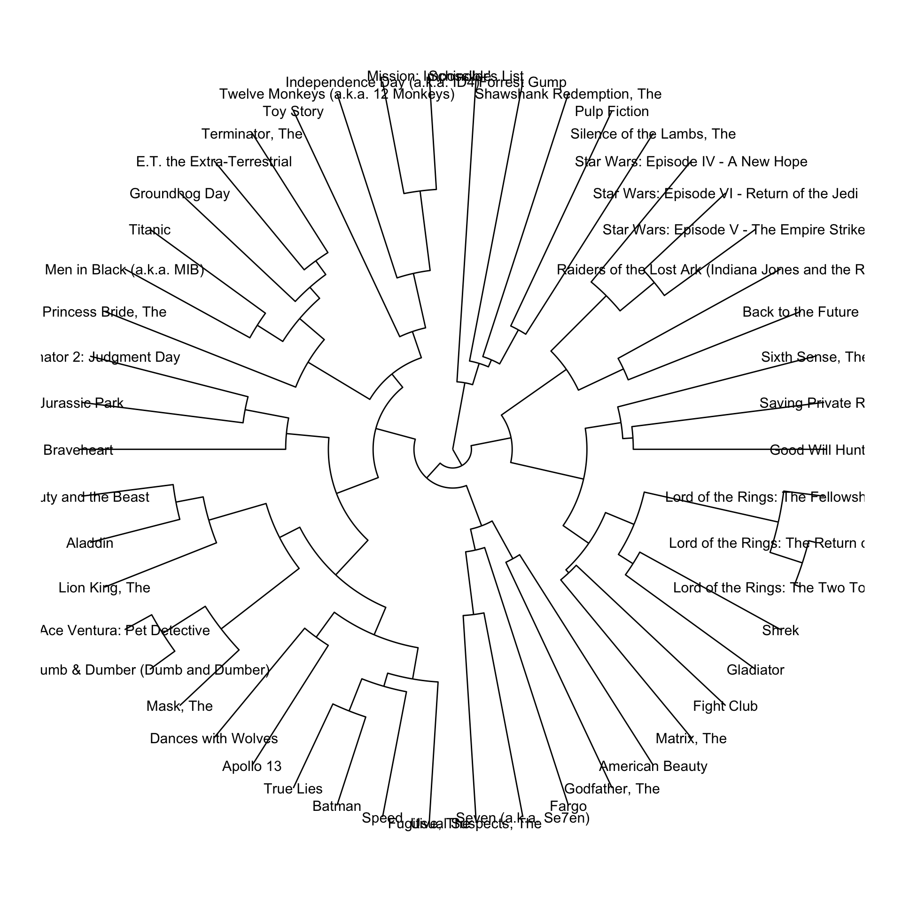
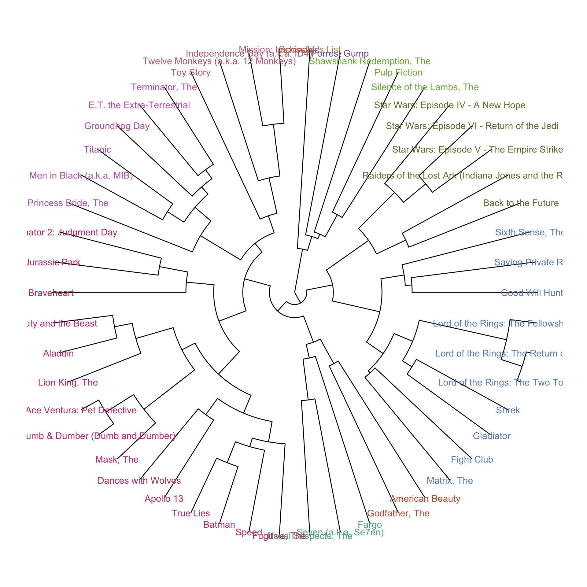

library(tidyverse)
library(ggraph)
library(knitr)
library(tidygraph)
theme_set(theme_graph())Hierarchical Clustering
Clustering data at multiple scales using trees.
In reality, data are rarely separated into a clear number of homogeneous clusters. More often, even once a cluster formed, it’s possible to identify a few subclusters. For example, if you initially clustered movies into “drama” and “scifi”, you might be able to further refine the scifi cluster into “time travel” and “aliens.”
\(K\)-means only allows clustering at a single level of magnification. To instead simultaneously cluster across scales, you can use an approach called hierarchical clustering. As a first observation, note that a tree can be used to implicitly store many clusterings at once. You can get a standard clustering by cutting the tree at some level.

- These hierarchical clustering trees can be thought of abstract versions of the taxonomic trees. Instead of relating species, they relate observations in a dataset.
Elaborating on this analogy, the leaves of a hierarchical clustering tree are the original observations. The more recently two nodes share a common ancestor, the more similar those observations are.
The specific algorithm proceeds as follows,
- Initialize: Associate each point with a cluster \(C_i := \{x_i\}\).
- Iterate until only one cluster: Look at all pairs of clusters. Merge the pair \(C_k, C_{k^{\prime}}\) which are the most similar.






In R, this can be accomplished by using the
hclustfunction. First, we compute the distances between all pairs of observations (this provides the similarities used in the algorithm). Then, we applyhclustto the matrix of pairwise distances.We apply this to a movie ratings dataset. Movies are considered similar if they tend to receive similar ratings across all audience members. The result is visualized below.
movies_mat <- read_csv("https://uwmadison.box.com/shared/static/wj1ln9xtigaoubbxow86y2gqmqcsu2jk.csv")
D <- movies_mat %>%
column_to_rownames(var = "title") %>%
dist()
hclust_result <- hclust(D)
plot(hclust_result, cex = 0.5)
- We can customize our tree visualization using the ggraph package. We can convert the hclust object into a ggraph, using the same
as_tbl_graphfunction from the network and trees lectures.
hclust_graph <- as_tbl_graph(hclust_result, height = height)
hclust_graph <- hclust_graph %>%
mutate(height = ifelse(height == 0, 27, height)) # shorten the final edge
hclust_graph# A tbl_graph: 99 nodes and 98 edges
#
# A rooted tree
#
# Node Data: 99 × 4 (active)
height leaf label members
<dbl> <lgl> <chr> <int>
1 27 TRUE "Schindler's List" 1
2 27 TRUE "Forrest Gump" 1
3 27 TRUE "Shawshank Redemption, The" 1
4 27 TRUE "Pulp Fiction" 1
5 27 TRUE "Silence of the Lambs, The" 1
6 58.7 FALSE "" 2
7 63.9 FALSE "" 3
8 64.9 FALSE "" 4
9 67.9 FALSE "" 5
10 27 TRUE "Star Wars: Episode IV - A New Hope" 1
# ℹ 89 more rows
#
# Edge Data: 98 × 2
from to
<int> <int>
1 6 4
2 6 5
3 7 3
# ℹ 95 more rowsggraph(hclust_graph, "dendrogram", height = height, circular = TRUE) +
geom_edge_elbow() +
geom_node_text(aes(label = label), size = 4) +
coord_fixed()
- We can cut the tree to recover a standard clustering. This is where the grammar-of-graphics approach from ggraph becomes useful – we can encode the cluster membership of a movie using color, for example.
cluster_df <- cutree(hclust_result, k = 10) %>% # try changing K and regenerating the graph below
tibble(label = names(.), cluster = as.factor(.))
cluster_df# A tibble: 50 × 3
. label cluster
<int> <chr> <fct>
1 1 Seven (a.k.a. Se7en) 1
2 1 Usual Suspects, The 1
3 2 Braveheart 2
4 2 Apollo 13 2
5 3 Pulp Fiction 3
6 4 Forrest Gump 4
7 2 Lion King, The 2
8 2 Mask, The 2
9 2 Speed 2
10 2 Fugitive, The 2
# ℹ 40 more rows# colors chosen using https://medialab.github.io/iwanthue/
cols <- c("#51b48c", "#cf3d6e", "#7ab743", "#7b62cb", "#c49644", "#c364b9", "#6a803a", "#688dcd", "#c95a38", "#c26b7e")
hclust_graph %>%
left_join(cluster_df) %>%
ggraph("dendrogram", height = height, circular = TRUE) +
geom_edge_elbow() +
geom_node_text(aes(label = label, col = cluster), size = 4) +
coord_fixed() +
scale_color_manual(values = cols) +
theme(legend.position = "none")